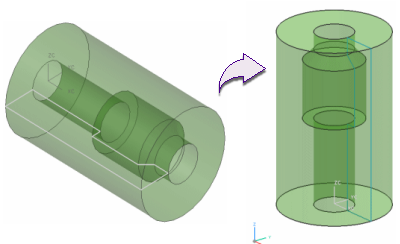

Axisymmetric analysis requires that the center of rotation and radial axis of the axisymmetric model be properly aligned to the absolute coordinate system. You can use the Reposition Master command to reposition the idealized part.
For the NX Nastran solver:
The axisymmetric axis is absolute Z
The axisymmetric plane is absolute XZ for positive X
This means the model must lie in the +X half of the XZ plane.
